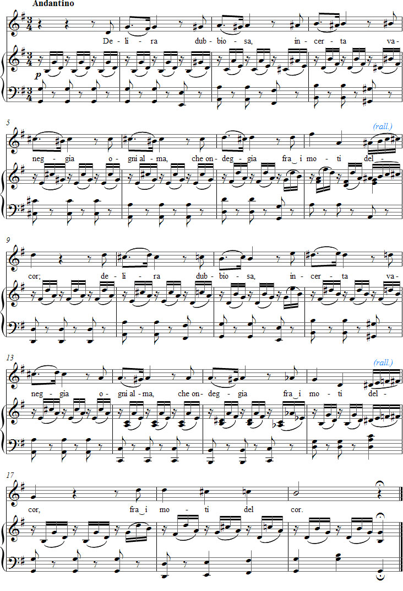

← Takaisin etusivulle
Vaccaj – Harjoitus 5
Valitse ääniala:
Soprano
Mezzo
Alto
Baritoni
Kuuntele äänite
Selaimesi ei tue äänisoitinta.
Nuotit

Exercise 5
[i semi'tɔni]
I semitoni
Semitones
[de'lira dub'bjosa]
Delira dubbiosa,
Wavering and delirious,
[in'tʃɛrta va'neddʒa]
incerta, vaneggia
insecurely dreaming
['oŋŋi 'almake on'deddʒa]
ogni almache ondeggia.
every soul that hesitates
[fra i 'mɔti del 'cor]
fra i moti del cor.
in between the movements of the heart.
Every soul dreams and hesitates
wavering in the agonies
of the heart.